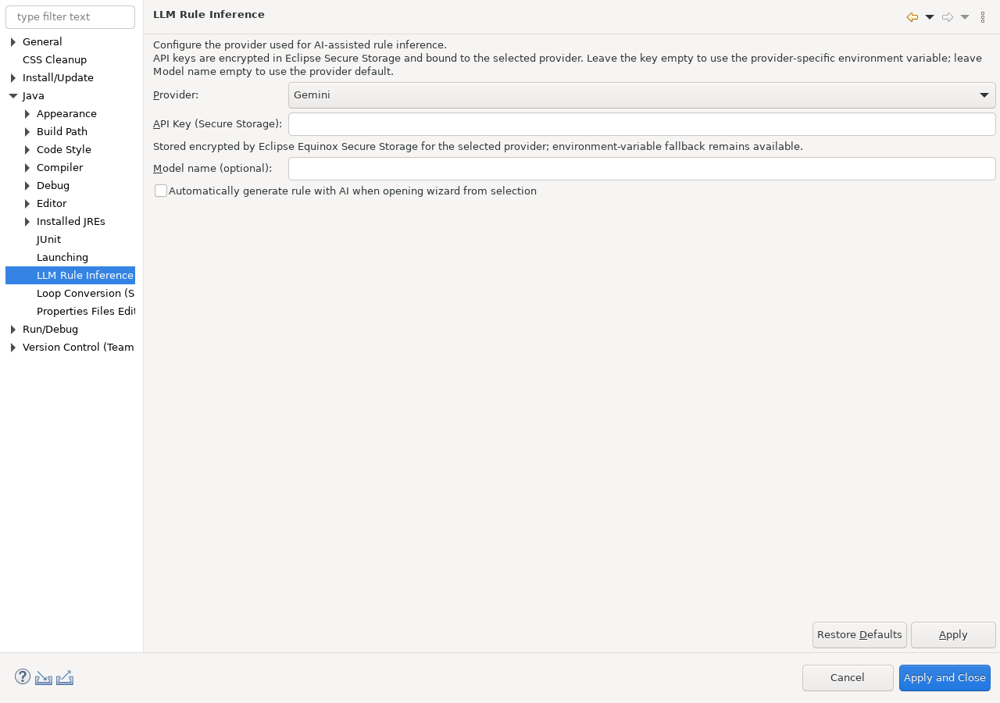

LLM Rule Inference is the shared inference backend used by commit mining, selected-diff mining, the Java-editor quick assist, and the New Hint File wizard. It proposes TriggerPattern DSL; it does not execute transformations directly.
Open Window > Preferences > Java > LLM Rule Inference.

The provider can be selected in Eclipse. When no explicit credential is stored, Sandbox can read provider credentials from the process environment:
GEMINI_API_KEYOPENAI_API_KEYDEEPSEEK_API_KEYDASHSCOPE_API_KEYLLAMA_API_KEYMISTRAL_API_KEYCredential QA note: prefer environment-variable credentials for now. The current explicit API-key preference is being migrated away from ordinary Eclipse preferences to secure credential storage; do not rely on ordinary preference export as a safe place for secrets.
When an AI-assisted action is invoked, the relevant code example is sent to the configured provider as part of the inference prompt. Depending on the entry point, that material can be a Java-file commit diff, a selected unified diff, or code selected/entered in the rule authoring UI.
No LLM call is required to execute an already-authored deterministic .sandbox-hint rule.
The provider response is converted into a rule proposal and passed through Sandbox DSL validation. Validation protects the parser/execution contract, but it is not a proof that the inferred transformation is semantically correct for every future match.
Manual .sandbox-hint authoring and deterministic Code Patterns cleanups remain available. AI-only assists are hidden or produce no rule until a supported provider is available.
Back to overview | Mine rules from Git changes | Author rules manually or from a selection